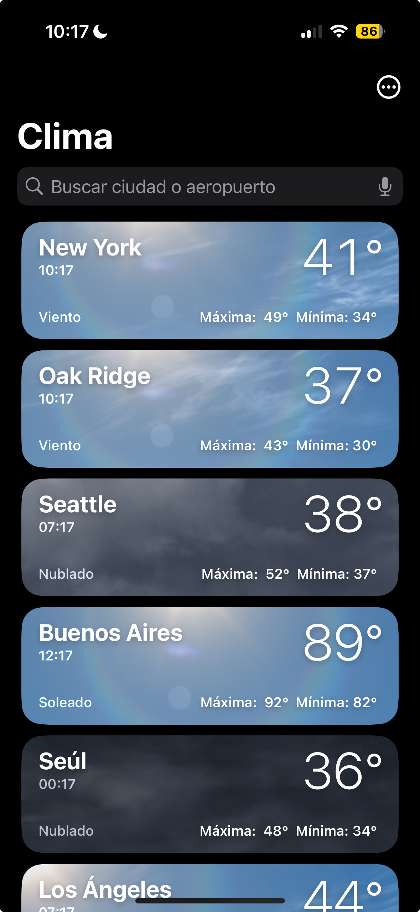
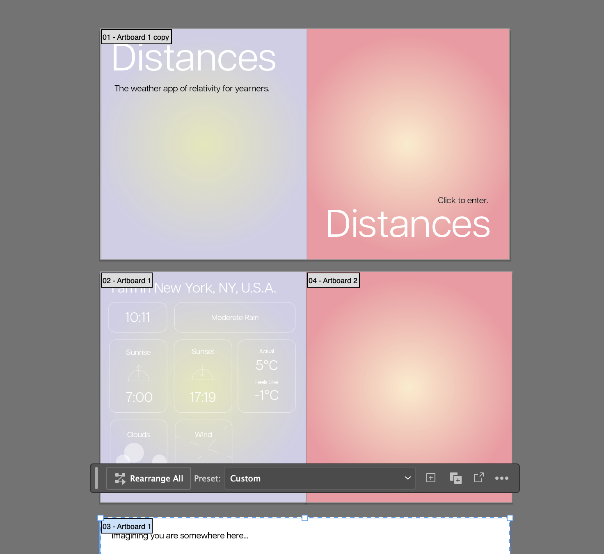
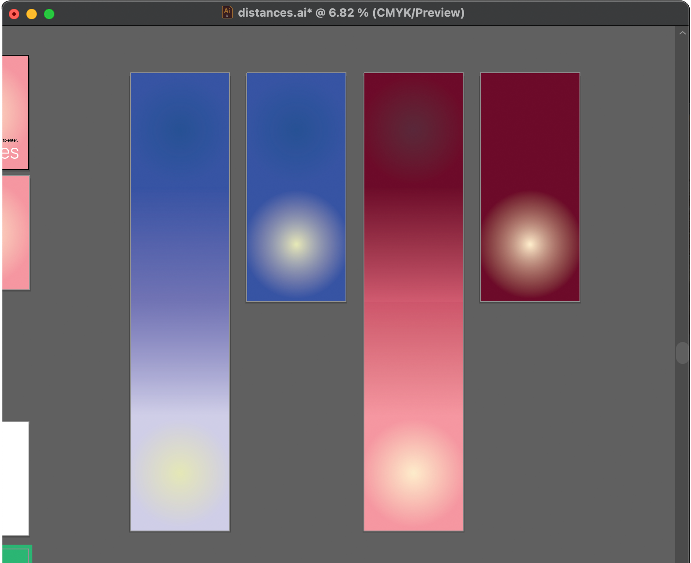
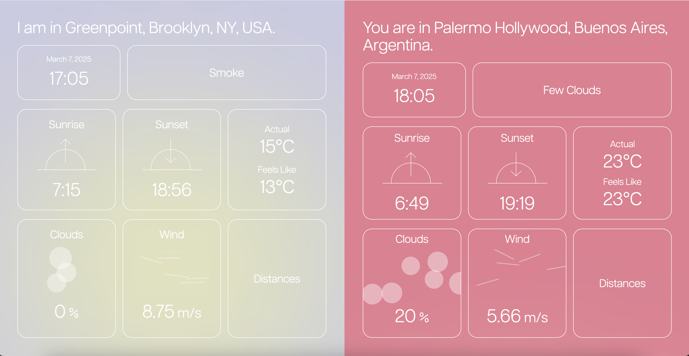
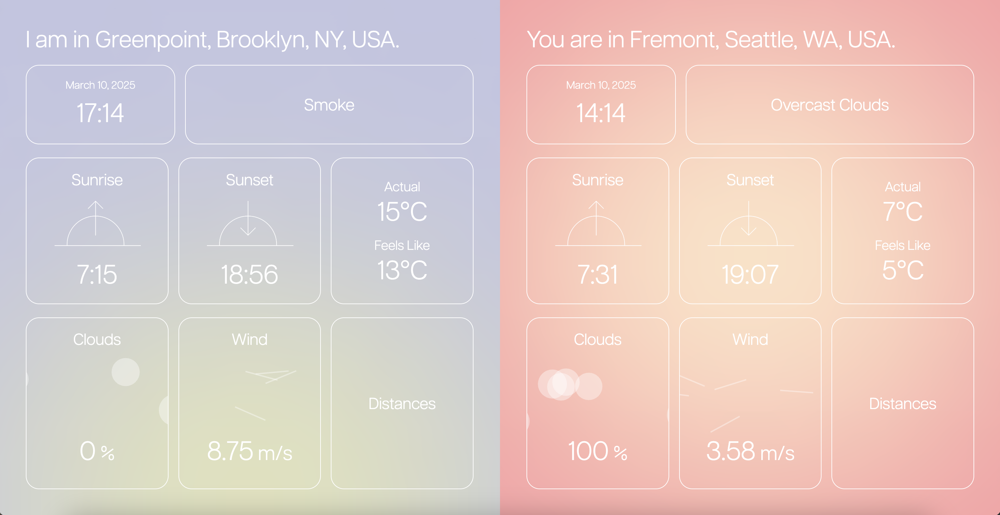

Distances
The weather app of relativity for humans who don't share space.

Which cities are saved on your weather app?
I was inspired by this single conversation starter.
Upon examining my iPhone weather app I realized it was composed of cities beyond the one I live in and those I have visited; it included those that were homes of people I love.
Being long-distance from family and friends has always been a reality for me, and somehow seeing their weather conditions, their clocks, is a way of bridging a distance, that painful knowledge that we don’t share physical space in this moment and can’t see each other at will.
Love makes everything relative.
I see my temperature, my wind speeds, my sunset, not as they are but in relation to those of others. Through an attempt to express this relativity was born Distances, the weather app for humans who don’t share space.

Initial UI mockup on Adobe Illustrator
I created an interactive homepage which reflects the mood of the application. To retain the illusion of a gradient background, I created a feathered circle which follows the cursor.
I first tested this in p5.js.
I used the Geolocation API to retrieve the user's location. Meanwhile, the user can enter the location of the person whose weather they want to observe.
I used Google's Reverse geocoding API and OpenWeather's Weather API to retrieve the weather conditions of the user and the other person. Not only are the weather conditions displayed, but clicking on each element calculates a "distance," for instance the difference in temperature.
I wanted to create a responsive application; one way I implemented this is by having the gradient background change by taking into account the current time and sunrise & sunset times.

My initial visual brainstorm of the changing gradient.
I also have these cloud & wind animations reflect the % cloudiness and wind speed in each location.
I created the cloud and wind animations with p5.js (the above canvases are my drafts to determine how to achieve the desired visual). In the code used in the webpage, the # of circles and speed of the moving lines are affected by variables once the weather data is fetched.


The final product is dedicated to my friends & family who I can't always see but think about constantly. When I imagine the weather through your eyes it makes our distance feel a little closer.
While this project is not yet live, feel free to contact me if you are curious about my code or process!